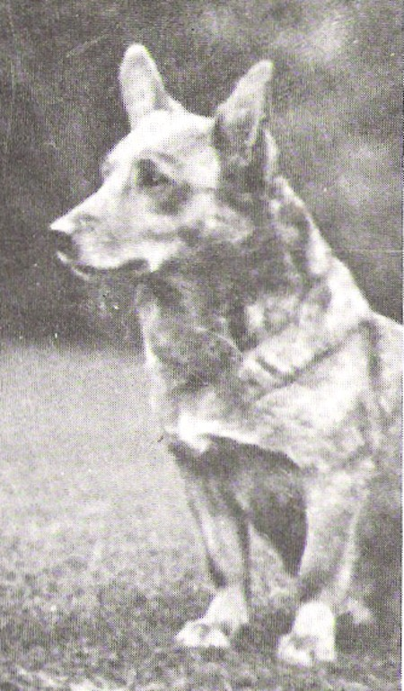
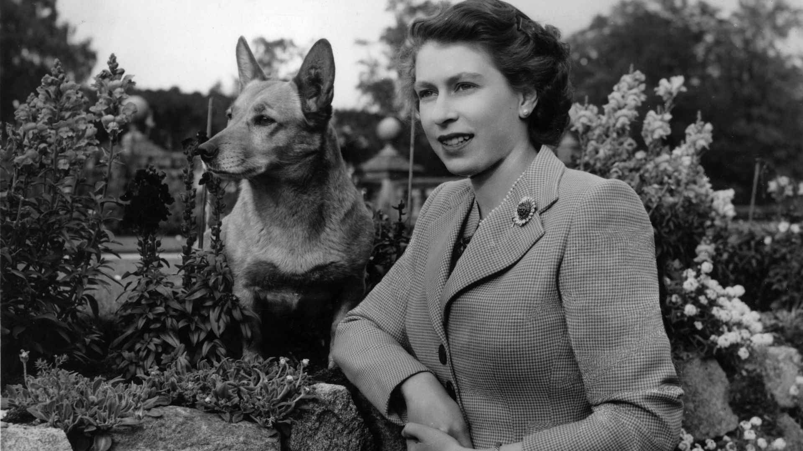

History

Shan Fach, first ever Corgi champion
Welsh Corgis were once cattle herding dogs; a type of dog referred to as "heelers",
meaning that they would nip at the heels of the larger animals to keep them on the move.
Their low height off the ground and high agility would allow them to avoid being kicked
The first recorded date for Corgis appearing in the show ring was in Wales is 1925.
The first Championship was awarded at a Cardiff show in 1928, to a red and white
Pembroke girl named Shan Fach.
In 1933 the first Welsh Corgis were brought to the United States by a breeder named Mrs. Lewis Roesler.
She had previously been well known for breeding Old English Sheepdogs.
Breeds
There are two breeds of Welsh Corgis, the Cardigan and the Pembroke. Both were named for the
county in Wales where it originated. The dogs share several traits, such as their coats,
which are water-resistant and shed on average twice a year. Both breeds also have short legs,
and fox-like heads. However, the body of the Cardigan is slightly longer than the Pembroke;
its head is also typically larger than that of a Pembroke and it has a larger nose.
 The two breeds, Pembroke on the left and Cardigan on the right
The two breeds, Pembroke on the left and Cardigan on the right
Health
According to the Kennel Club Purebred Dog Health the two breeds of Corgi
have similar lifespans: they both live over 12 years on average. Both breeds
are relatively health, there main causes of death were canine cancer and old
age. However, the Pembroke Corgi has higher rates of other health complications
like kidney failure, and eye conditions.
Pop Culture

Queen Elizabeth II and her Corgi Susan
Queen Elizabeth II has long been associated with Corgis. After a visit to Thomas Thynne,
5th Marquess of Bath in 1933, Princesses Elizabeth and Margaret made it well known to their
family that they liked the Corgis owned by the Marquess. Their father, Prince Albert, Duke of York,
purchased the Pembroke Corgi Rozavel Golden Eagle, from the Rozavel kennels in Surrey. It was renamed Dookie.
Corgis have also appeared on screen, stage and in novels. In 1963, a Corgi was featured in
the Walt Disney film Little Dog Lost, which led to an increase in popularity for the breed
within the United States. In the anime Cowboy Bebop, the crew has a super-intelligent Pembroke
Welsh Corgi, Ein, on their ship.